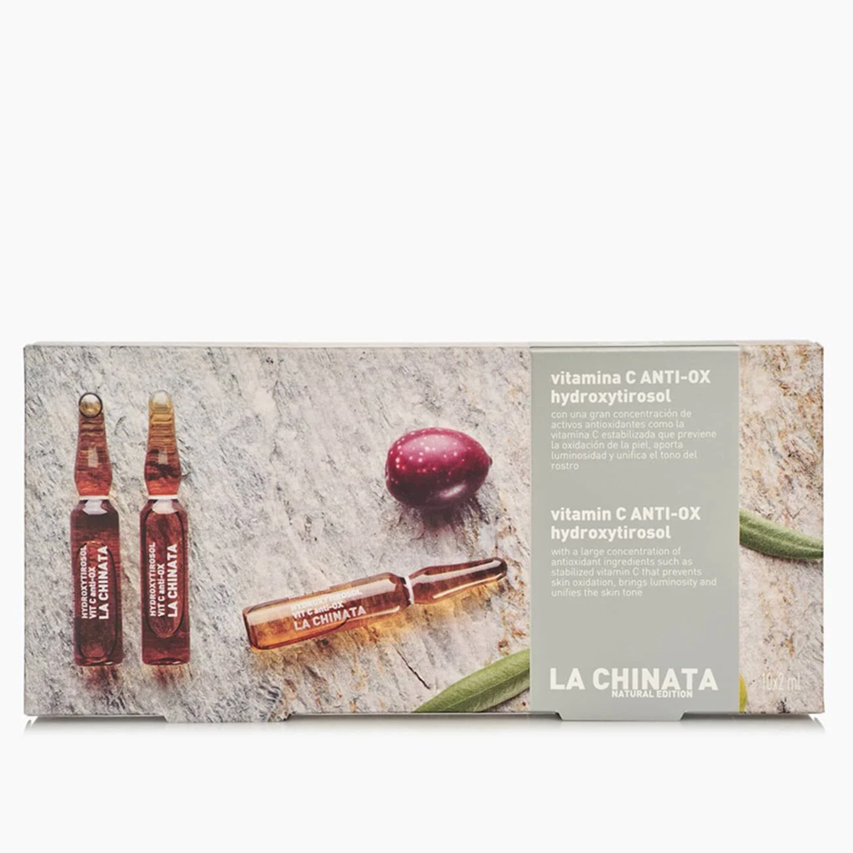

Cosmetic Made in Spain
聯繫我們
產品展示
AMPOLLAS ANTI-OX CON VITAMINA C E HIDROXTIROSOL LA CHINATA

140.6 Kr Content: 10*2ml
Las ampollas antiox tienen una alta concentración de activos antioxidantes e hidratantes que actúan sobre la pérdida de firmeza de la piel y sobre las líneas de expresión. Están enriquecidas con Vitamina C estabilizada, que previene la oxidación de la piel, aporta luminosidad y unifica el tono del rostro. Contienen también Hidroxitirosol, obtenido del olivo, que aumenta la vitalidad de los fibroblastos para aumentar la producción de colágeno y elastina. Además, está presente el extracto de hoja de olivo, que actúa como antiinflamatorio, antiirritante y antioxidante; y además incluyen precursores de glicosaminoglicanos y proteoglicanos que actúan reafirmando la piel, ayudando a eliminar las arrugas y los signos de la edad.
Vida Copyright © 2024 All rights reserved